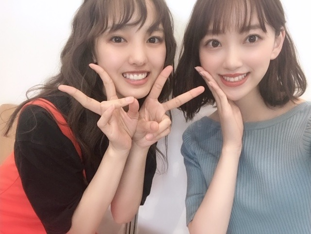

2019/0519Sunトマトの力を信じます
夏が近づくと、奥多摩に行きたくなります
なりませんか？
私はなります
一回ロケで行ったのですが、自然が綺麗で美味しいハンバーグもあって地元の岐阜県に近いものを感じ虜になりました
日焼けは怖いけど
でも外に出たい
日焼け対策万全で今年も夏を楽しめたらと思います
太陽って素晴らしいと思うんです
(急に)
だって陽を浴びないとまず体が起きないし頭もすっきりしないし外に出て陽を浴びて風に吹かれるのは体と心の健康を保つためにも大事だと思っています

と言いながら私は皮膚が弱く
日光アレルギーとやらに昨年初めてなりました...
長時間、強い陽を浴びると湿疹が出てしまうので神宮ライブも実はリハから大変でした。笑
アレルギー多すぎて泣ける...
ハウスダスト ダニ カビ 花粉4種類 ネコ ウサギ 日光
体質改善で良くなるものなのかなぁ？？
試せるものは試してみようと思います！
がんばれ、わたし！

最近はロングワンピースを集めています
さらっと着れてラクだし涼しいし
いろんな生地のがあって着心地もよくて...
ガーリーなのもあればシンプルなのもあるので今年の夏はたくさん着たいです

昨日のガールズアワードにて
飯窪春菜氏、かわいい

札幌コレクションも楽しかったなー
明日、20日19:00〜
ネプリーグ に出させていただきます！
頑張りました、、
コンフィデンスマンチームの皆さんが本当に優しくて感動...
映画早く観たいです！
では☺︎
2019/05/19 12:00
コメント(326)
おはようございます‼︎
ブログ更新、ありがとうございます♪
夏の奥多摩、いいですよね〜
空気がきれいで、涼しくて。
学生の頃は、よくキャンプで行ってました♪
鳩ノ巣渓谷とか、電車でも行くことができるし、非常に便利‼︎
しかも、都内とは思えないほど、雄大な自然。
川の水も本当に綺麗で、とても癒されます♪
マイナスイオンをたっぷり浴びている感じがしますよね‼︎
最近では、奥多摩にある日原鍾乳洞に行きました。
これまた思った以上に立派な鍾乳洞で、いわゆる安近短の観光としてはお勧めです♪
奥多摩の美味しいハンバーグ…は食べたことないけど、今度行ってみますね‼︎
自分は、岐阜の自然も大好きです♪
飛騨高山も下呂温泉も、本当にいいところ。
ただ、夏に行ったことはないんですよね。
今度行ってみますね‼︎
未央奈、アレルギーがたくさんなんですね。
かわいそうに…
自分は、これといったアレルギーはありません。
1つぐらい引き取ってあげたいぐらい…‼︎
花粉症は、毎日ヨーグルトを、できれば種類を変えながら食べるといいなんて聞きますけどね。
よかったら試してみてください‼︎
ロングワンピース、めっちゃ可愛い…‼︎
あまり流行に敏感な方ではないけど、ちょっと流行りなのかな?
去年あたりから、着ている人を多く見かける気がします♪
そうそう、1つ前のブログ。
口紅のカラー、とってもいいですね‼︎
未央奈の透明感がより引き立つ気がします♪
チークの色ともとても相性がいい感じ。
おしゃれ未央奈全開ですね‼︎
今日のネプリーグ、とっても楽しみにしてました♪
リアルタイムで間に合えばいいけど、一応録画予約もしてます。
楽しみ楽しみ…‼︎
ではでは、また。
今日も未央奈にとっていい1日になりますように♪
ブログ更新、ありがとうございます♪
夏の奥多摩、いいですよね〜
空気がきれいで、涼しくて。
学生の頃は、よくキャンプで行ってました♪
鳩ノ巣渓谷とか、電車でも行くことができるし、非常に便利‼︎
しかも、都内とは思えないほど、雄大な自然。
川の水も本当に綺麗で、とても癒されます♪
マイナスイオンをたっぷり浴びている感じがしますよね‼︎
最近では、奥多摩にある日原鍾乳洞に行きました。
これまた思った以上に立派な鍾乳洞で、いわゆる安近短の観光としてはお勧めです♪
奥多摩の美味しいハンバーグ…は食べたことないけど、今度行ってみますね‼︎
自分は、岐阜の自然も大好きです♪
飛騨高山も下呂温泉も、本当にいいところ。
ただ、夏に行ったことはないんですよね。
今度行ってみますね‼︎
未央奈、アレルギーがたくさんなんですね。
かわいそうに…
自分は、これといったアレルギーはありません。
1つぐらい引き取ってあげたいぐらい…‼︎
花粉症は、毎日ヨーグルトを、できれば種類を変えながら食べるといいなんて聞きますけどね。
よかったら試してみてください‼︎
ロングワンピース、めっちゃ可愛い…‼︎
あまり流行に敏感な方ではないけど、ちょっと流行りなのかな?
去年あたりから、着ている人を多く見かける気がします♪
そうそう、1つ前のブログ。
口紅のカラー、とってもいいですね‼︎
未央奈の透明感がより引き立つ気がします♪
チークの色ともとても相性がいい感じ。
おしゃれ未央奈全開ですね‼︎
今日のネプリーグ、とっても楽しみにしてました♪
リアルタイムで間に合えばいいけど、一応録画予約もしてます。
楽しみ楽しみ…‼︎
ではでは、また。
今日も未央奈にとっていい1日になりますように♪
未央奈さん工事中見たよ。平泳ぎの絵書いたけど下手だね。自分も絵が書けない。ネプリーグ頑張って✊ ✊
可愛いっす！
ネプリーグ観るよ〜
ブログありがとー
朝起きた時に晴れてるとやっぱり気持ちがいいと思う！
朝起きた時に晴れてるとやっぱり気持ちがいいと思う！
堀ちゃんブログありがと！
僕はハウスダストアレルギーなので
年中鼻づまりって感じです
ネプリーグ録画したので見ますね
僕はハウスダストアレルギーなので
年中鼻づまりって感じです
ネプリーグ録画したので見ますね
チャァオ～～!☆彡
みおちゃん、こんにちは～～～⤴️⤴️❕❤️❤️❤️❤️❤️笑顔
きのうさぁ～～～⤴️⤴️
ダーウィンが来たの奈良の可愛いぃ～鹿の特集を見てましたぁ～～～⤴️⤴️❕❤️❤️❤️❤️❤️笑顔
その中で、可愛いぃ～～～⤴️⤴️⤴️
可愛いぃ～～～⤴️⤴️⤴️小鹿の誕生には感動ものでした❕❤️❤️❤️❤️❤️笑顔
暫くして立ち上がりその後、お母さん鹿についてまわる
小鹿の顔をずっと見ていると～～⤴️⤴️
暫くするとぉ～～～⤴️⤴️
「あ❕・・・」・・
「みおちゃんだぁ⤴️⤴️❕❤️❤️❤️笑顔」
・・と気づきましたぁ～～～⤴️⤴️❕❤️❤️❤️❤️❤️笑顔
みおちゃんって、可愛いぃ～小鹿さんだったんですねぇ❕❤️❤️❤️❤️❤️笑顔
～☆～☆☆～☆～☆☆～☆～
おいらの身体は
いろんなアレルギーが結構あるのでぇ～～⤴️⤴️❕
皮膚アレルギーを抑える薬を飲んで、１回反応をリセット(0まで落とします)するかたちにしています❕❤️❤️❤️❤️❤️笑顔
あと睡眠薬の中でも意外と激しい胸焼け(逆流性食道炎)や皮膚アレルギーが朝消えているので助かってます❕❤️❤️❤️❤️❤️笑顔
(他では神経をとった歯１ヶ所だけ～～⤴️⤴️
神経過敏なのでぇ～ちょっと硬い食べ物や、上下に歯同士があたっても凄く凄く痛くなるので
痛み止めでは、無理なので炎症を抑える薬を連続5、6回は飲んでます❕❤️❤️❤️❤️❤️笑顔
ようやく、今日の朝その歯の痛みが取れました❕)
みおちゃん❕・・・
アレルギーは、抗体が間違って反応するから
抗生剤でリセットがオヌヌメだよ❕❤️❤️❤️❤️❤️笑顔
あ❕・・・おいら唯一花粉とは仲良しだよぉ⤴️⤴️❕❤️❤️❤️❤️❤️笑顔
「まぁ、おいらは抗生剤飲んでぇ～～⤴️⤴️
自分の抗体をブロックさせながら～～⤴️⤴️
かつ、その環境にちょっとずつ身体を馴染ませてるよぉ～～～⤴️⤴️❕❤️❤️❤️❤️❤️笑顔」
嬉しいことにおととい、おいらそれで１つ人工物質のアレルギーをだいぶクリアできたよぉ❕笑顔
みおちゃん、お大事にねぇ❕❤️❤️❤️❤️❤️笑顔
お仕事楽しく頑張ってねぇ❕❤️❤️❤️❤️❤️笑顔
またねぇ～～⤴️⤴️❕❤️❤️❤️❤️❤️笑顔
☆大人しい、おすまし！より☆彡
みおなちゃん更新ありがとう╰(*´︶`*)╯♡
夏になると涼しい所に行きたくなります笑
奥多摩も良き所なんですね(*´꒳`*)
日光アレルギーなんですね(ﾟoﾟ;;
たくさんアレルギーあると大変ですね（；＿；）
改善出来るように頑張ってね٩(๑❛ᴗ❛๑)۶
写真もありがとう（╹◡╹）♡
ロングワンピースも似合ってて良きです
美白ですね
札幌コレクションお疲れ様でした(*´-`)
ネプリーグ観ますねー♪(๑ᴖ◡ᴖ๑)♪
夏になると涼しい所に行きたくなります笑
奥多摩も良き所なんですね(*´꒳`*)
日光アレルギーなんですね(ﾟoﾟ;;
たくさんアレルギーあると大変ですね（；＿；）
改善出来るように頑張ってね٩(๑❛ᴗ❛๑)۶
写真もありがとう（╹◡╹）♡
ロングワンピースも似合ってて良きです
美白ですね
札幌コレクションお疲れ様でした(*´-`)
ネプリーグ観ますねー♪(๑ᴖ◡ᴖ๑)♪
ブログ更新ありがとうぉ～
ガルアワの服すごく可愛かったです！
ニューシングルとレコメン楽しみにしてます！
ガルアワの服すごく可愛かったです！
ニューシングルとレコメン楽しみにしてます！
夏が近くなると、俺も奥多摩に行きたくなる気分になるよ。
一人旅でも良いから、奥多摩に行きたいよ。
話変わるけど、ネプリーグ観たよ。
未央奈、答えられなくて残念だったね。今度は、ちゃんと答えられる様に頑張ろうネッ。
一人旅でも良いから、奥多摩に行きたいよ。
話変わるけど、ネプリーグ観たよ。
未央奈、答えられなくて残念だったね。今度は、ちゃんと答えられる様に頑張ろうネッ。
未央奈 相変わらず可愛い
ワンピース似合ってる
いつもブログ更新ありがとう！
私も数年前から、日光アレルギーになっちゃいまして、
強い日差しを浴びると湿疹がでちゃいます。。。
未央奈ちゃんと一緒ですね笑
私もトマトの力を信じてみるよ！
奥多摩いいですよね！
確かに岐阜に似てるかも！
私は岐阜のような自然を求めて1人で山梨に行くよ！笑
未央奈ちゃんの黒のロングワンピース姿、すごい可愛い！
速攻で画像を保存させていただきました笑
今週末は暑いみたいだから、体には十分に気をつけてください！
私も数年前から、日光アレルギーになっちゃいまして、
強い日差しを浴びると湿疹がでちゃいます。。。
未央奈ちゃんと一緒ですね笑
私もトマトの力を信じてみるよ！
奥多摩いいですよね！
確かに岐阜に似てるかも！
私は岐阜のような自然を求めて1人で山梨に行くよ！笑
未央奈ちゃんの黒のロングワンピース姿、すごい可愛い！
速攻で画像を保存させていただきました笑
今週末は暑いみたいだから、体には十分に気をつけてください！
未央奈さん超絶可愛い！
いつも応援しています！ これからも頑張ってください！
ちなみに、僕は愛知県出身です！
いつも応援しています！ これからも頑張ってください！
ちなみに、僕は愛知県出身です！
奥多摩いいですね‥うんうん。ただ清瀬もいいところですよ。未央奈が清瀬駅のプラットフォームに一時でも立ってくれたらこの町に住むファンとしては最高の喜びです。何かのついでがあったら是非お立ち寄りくださいませ。ワンピースは何故かドキドキします。
ブログ更新ありがとう！！
私も最近ロングワンピース集めてるので、一緒だ！！と思って嬉しくなりました！
握手会いきます！そこでまたロングワンピースのお話したいです
私も最近ロングワンピース集めてるので、一緒だ！！と思って嬉しくなりました！
握手会いきます！そこでまたロングワンピースのお話したいです
奥多摩の手前、青梅の多摩川のほとりに住んでます。
窓を開けると、カヤックに乗った人が川下りしてたり♪
去年、都内過去最高気温の40.8℃を記録してしまい、
"夏暑くて、冬寒い"所
になってしまいましたが、
自然が多くてとても良い所です♪
奥多摩にもロードバイクでサイクリングに行っております♪
緑の多い所は心休まりますね。
地元横浜から、選んだこの地に移り住んで10年以上経ちましたが、飽きません。
正解でした。
日光アレルギーですと、色々気にかけなければならないと思いますが、
何度も足を運んで自然を満喫してください♪
窓を開けると、カヤックに乗った人が川下りしてたり♪
去年、都内過去最高気温の40.8℃を記録してしまい、
"夏暑くて、冬寒い"所
になってしまいましたが、
自然が多くてとても良い所です♪
奥多摩にもロードバイクでサイクリングに行っております♪
緑の多い所は心休まりますね。
地元横浜から、選んだこの地に移り住んで10年以上経ちましたが、飽きません。
正解でした。
日光アレルギーですと、色々気にかけなければならないと思いますが、
何度も足を運んで自然を満喫してください♪
みおなー
奥多摩いいとこいっぱいなんで、また遊びに来てください！よかったら案内しますよー
ライブ頑張って頑張って
奥多摩いいとこいっぱいなんで、また遊びに来てください！よかったら案内しますよー
ライブ頑張って頑張って
アレルギー大変やね(ﾟДﾟ)
気をつけて～ヾ（＾▽＾）ノ
応援してます！
気をつけて～ヾ（＾▽＾）ノ
応援してます！
お疲れ様(人´ｴ`*)♪
未央奈ちゃんこんばんたーん！
分かります！日焼けしなかったら外に沢山出るのになぁ笑笑
でも太陽には感謝しなきゃですね
早く『ホットギミック』が観たいー！と思う今日この頃です
それではまた！
分かります！日焼けしなかったら外に沢山出るのになぁ笑笑
でも太陽には感謝しなきゃですね
早く『ホットギミック』が観たいー！と思う今日この頃です
それではまた！
僕も日光アレルギーあります…大変ですよね分かります。曇りの日でも紫外線は出てるので、日焼け止めをこまめに塗り直すのが大事ですよ〜。
これからも頑張ってください！応援してます！
これからも頑張ってください！応援してます！
こんばんは！
トマトの力を信じます。
タイトル。笑
おぉ、奥多摩。
美味しいハンバーグ！いいね！(^-^)
今度行ってみようかな♪
最近日差しも気温も高めよねー
うんうん。太陽って素晴らしい！
(奥多摩→自然いっぱい→太陽。ギリギリセーフ！！)
そうだよね。大切。
スカウトマン衣装！可愛い子通りまーす✨
え、日光アレルギー。。
リハから大変だったんだね。
だからこそ強い想いみたいなのが伝わってくるんだね。
ほんといつもありがとう。大好きだよ。
♡
ウサギ。笑
こっちもネコアレルギー
うん。きっと良くなるよ！！
がんばれ、みおちゃん！
個人的な話ですが、ロングワンピース好きです。笑
わーい！わい。
飯窪さん！ほぉ！
札幌コレクションもかわいかったなー
ネプリーグみたよ。
がんばってました。。笑
あれは難しい！こっちも無理でした。。
では！また明日！
おやすみ〜☺︎
トマトの力を信じます。
タイトル。笑
おぉ、奥多摩。
美味しいハンバーグ！いいね！(^-^)
今度行ってみようかな♪
最近日差しも気温も高めよねー
うんうん。太陽って素晴らしい！
(奥多摩→自然いっぱい→太陽。ギリギリセーフ！！)
そうだよね。大切。
スカウトマン衣装！可愛い子通りまーす✨
え、日光アレルギー。。
リハから大変だったんだね。
だからこそ強い想いみたいなのが伝わってくるんだね。
ほんといつもありがとう。大好きだよ。
♡
ウサギ。笑
こっちもネコアレルギー
うん。きっと良くなるよ！！
がんばれ、みおちゃん！
個人的な話ですが、ロングワンピース好きです。笑
わーい！わい。
飯窪さん！ほぉ！
札幌コレクションもかわいかったなー
ネプリーグみたよ。
がんばってました。。笑
あれは難しい！こっちも無理でした。。
では！また明日！
おやすみ〜☺︎
スカウトマンの衣装可愛くて似合ってます(＾0＾)♡♡
私も日光アレルギー（可視光線）で悩んでいます。
もし、試されていい方法があればまたブログに載せてください
漢方薬で治る方もいるそうです。
もし、試されていい方法があればまたブログに載せてください
漢方薬で治る方もいるそうです。


堀ちゃん、大好きだよー